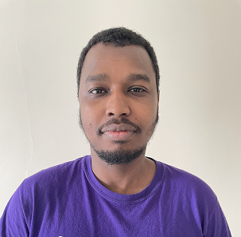

Babagoni Ibrahim Usman

Personal Profile
I am a highly motivated and results-oriented full stack developer with a passion for building innovative and user-friendly software applications. I have a strong understanding of the full software development lifecycle, from requirements gathering and analysis to design, development, testing, and deployment. I am also proficient in a variety of programming languages and technologies, including HTML, CSS, JavaScript, Python, Java, and SQL.
Education
University of Portsmouth – September 2019 – September 2022
MSc (Hons) in Forensic Information Technology – current predicted grade: 60%
- Computer Forensic Investigation and Cryptography: Forensic Toolkit Imager (FTK), Password Recovery Toolkit
(PRTK) and cryptographic encryption and decryption technique.
- Mobile Forensics; Issue and Practice: XRY – Extract -MSAB
- Systems, Security and Hacking: Computer Organization and Architecture, Computer Security Concepts and
Practical application, and Ethical Hacking.
- Global Landscape of Cybersecurity: Analysis and critical review of cybersecurity.
Mahatma Gandhi University – September 2013 – July 2016
BSc in Information Technology – Grade: 1:1
Maiduguri Capital School- Sept 2004 – July 2010
Savior Model College – September 2010 – July 2011
Skills
Graphical Programming: Adobe Photoshop, Adobe Illustrator and Corel Draw
Web Technology Languages: HTML, CSS and JavaScript
Programming Languages: C Programming, C++ and Java
Communication: Working with individuals as a team gave me the courage to be a key player and communicate verbally
as well as visual presentation using Microsoft PowerPoint.
Leadership: Consistency and supportiveness in practicing the required activity always uplift my moral high to lead a
group within workplace.
Report Writing: After findings and analysis of critical review resources written in a structured and Easy to read manner
for the reader – Using Microsoft word to put every information in a nice-looking written context.
- Computer Forensic Investigation and Cryptography: Forensic Toolkit Imager (FTK), Password Recovery Toolkit
(PRTK) and cryptographic encryption and decryption technique.
- Mobile Forensics; Issue and Practice: XRY – Extract -MSAB
- Systems, Security and Hacking: Computer Organization and Architecture, Computer Security Concepts and
Practical application, and Ethical Hacking.
- Global Landscape of Cybersecurity: Analysis and critical review of cybersecurity.
Relevant Experience
IT Tutor– November 2016 – October 2020
National Youth Service Corps (DIP Info-Tech Incubation Center)
Manging Director Musco Nigeria Limited- 2018-To Date
Other Experience
Assembly Operator- October 2019 – July 2020
City Technology (Team Recruitment Agency)
Customer Service – 14th AUGUST - PRESENT
ONTRAK RECRUITMENT AGENCY
Interests and Activities
- Enjoy Keeping up to date with current affairs, news and trends in technology by subscribing to google news
daily. Cycling everyday regularly to keep fit as a daily routine.
About me Contact